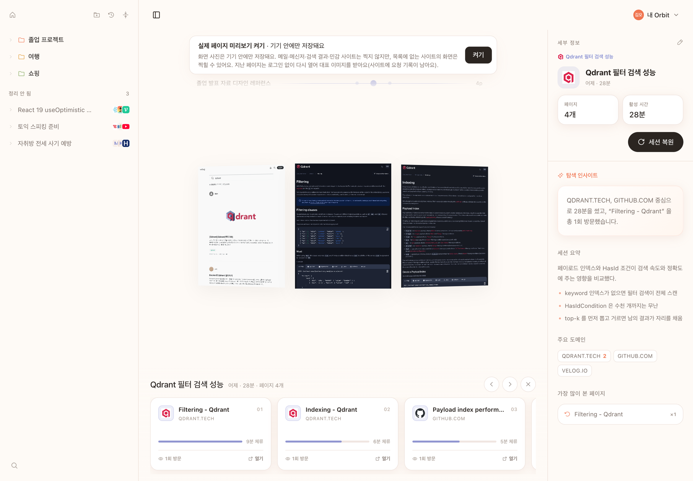
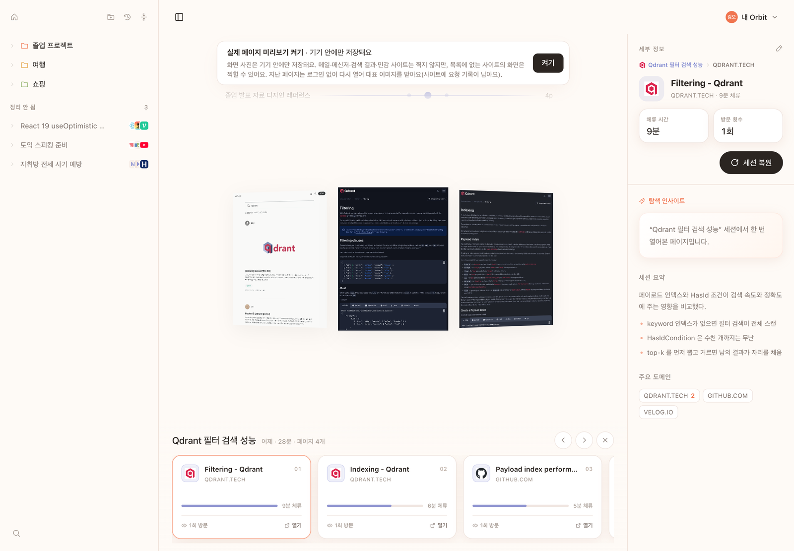
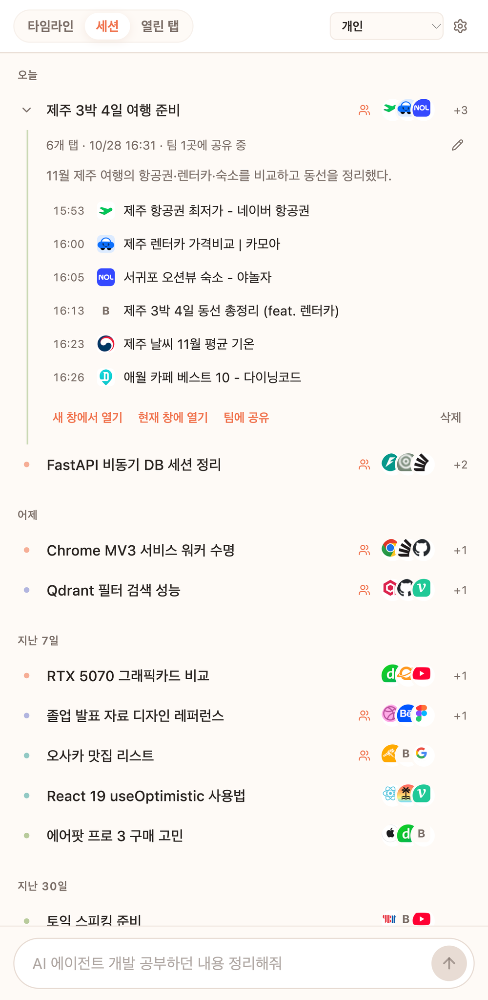
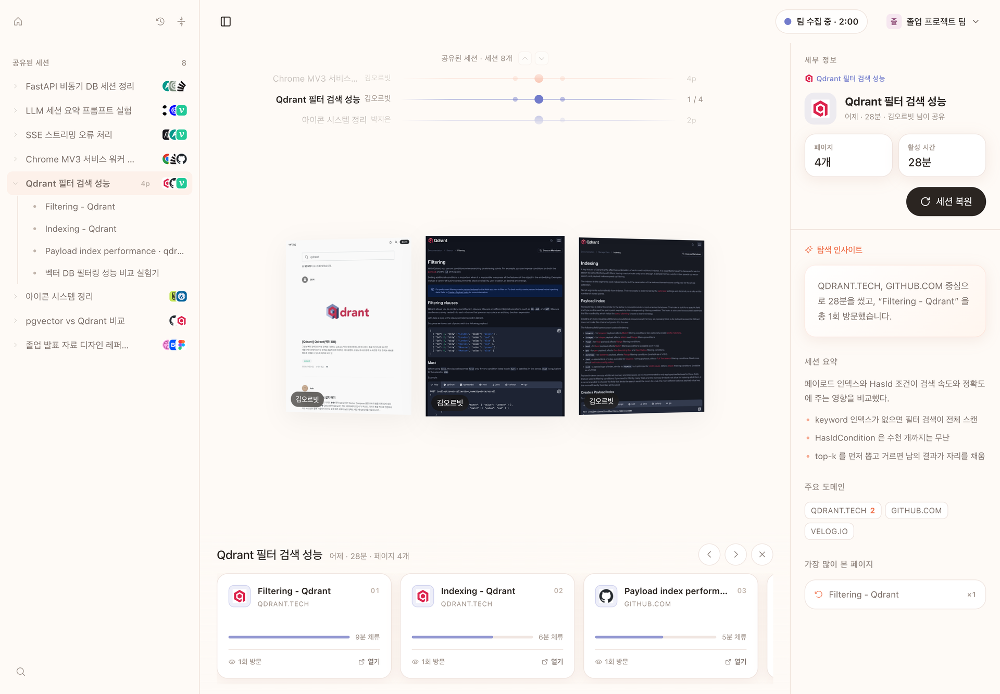
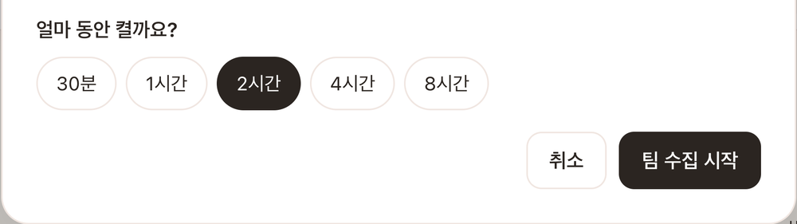
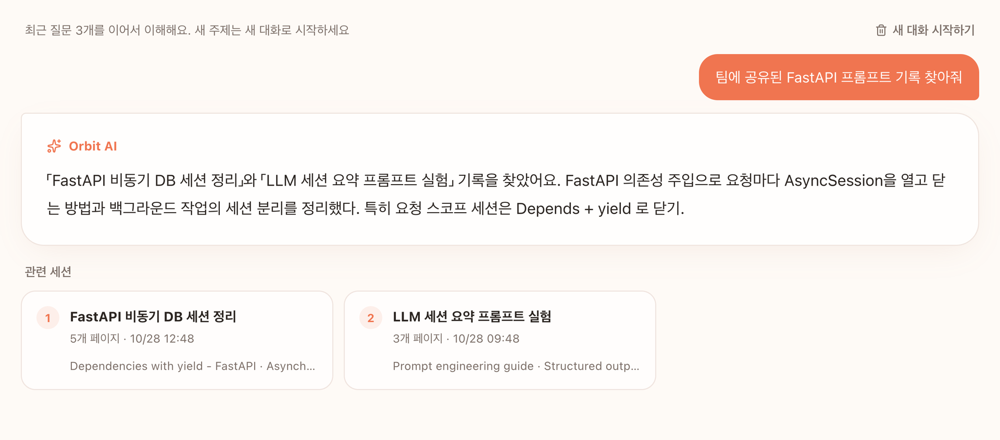

전준
팀대표
01 / THE IDEA
열어 둔 탭, 저장한 북마크, 길게 쌓인 방문 기록.
우리가 기억하는 건 주소보다 ‘그때 찾던 것’에
가깝습니다.
Orbit은 방문한 페이지를 탐색의 흐름으로 연결합니다.
필요할 때 기억나는 말로, 그 흐름으로 돌아오세요.
02 / ORBIT ATLAS
Orbit의 새 탭은 탐색의 지도입니다.
세션을 고르고, 궤도 위의
페이지를 살펴보며
그때의 흐름으로 돌아갑니다.

관련 있는 페이지가 모인 세션을 선택합니다. 탐색 주제를 한눈에 확인하고 이어갈 기록을 고르세요.
궤도를 따라 페이지를 살펴보고 내용을 확인합니다. 기억 속 화면에서 다시 찾는 길이 시작됩니다.
필요한 세션을 폴더에 모으고 페이지들을 함께 엽니다. 흩어진 탭을 다시 모으는 수고를 줄입니다.

03 / CHROME EXTENSION
기록에서 다시 탐색하기까지,
하나의 자연스러운 흐름.
익스텐션의 사이드패널에서 방문 흐름을 보고,
세션을 찾고,
다시 엽니다.
지금 하던 탐색을 떠날 필요가 없습니다.
새 탭에서는 넓게. 사이드패널에서는 가까이.

수집을 켜면 방문한 페이지가 기록되고,
관련 있는 페이지가
탐색 세션으로 정리됩니다.


기억나는 키워드나 내용으로 질문하면,
관련 세션과 전에
봤던 페이지를 찾습니다.

함께 살펴봤던 페이지들을 한 번에 열고,
중단했던 탐색을
다시 이어갑니다.


04 / TEAM ATLAS
팀 저장을 켜고, 함께 탐색하세요.
그때부터
모인 탐색이 세션으로 정리되어
팀 아틀라스에 쌓입니다.
서로 다른 사람이 찾은 자료를 한곳에서.
Team AI가 팀에 모인 기록에서 필요한 내용을 찾습니다.
팀을 선택하고
이 기기의 수집을 시작합니다.
각자의 방문이 세션으로
정리되어 팀에 쌓입니다.
아틀라스에서 살펴보고
Team AI로 질문합니다.


팀 수집이 허용된 공간에서 각자 동의한 뒤 시작합니다. 남은 시간을 확인하고 언제든 일시 정지하거나 끝낼 수 있습니다.
민감한 사이트와 제외한 주소는 팀 수집에서 빠집니다. 예전에 찾았던 자료는 기존의 세션 공유로 더할 수 있습니다.
TEAM SPACE

실제 제품의 시연 데이터
05 / BEHIND THE MEMORY
Orbit은 페이지를 저장하는 데서 끝나지 않습니다.
탐색의 순서와
내용을 연결하고,
질문에 필요한 기록을 되찾습니다.
수집을 켠 동안 방문한 페이지와 체류 흐름을 기록합니다.
모인 기록을 함께 분석해 관련 페이지를 묶고 탐색 맥락을 요약합니다.
질문과 관련 있는 기록을 찾고, 근거가 된 세션과 페이지를 함께 보여줍니다.
발견한 세션의 페이지들을 다시 열어 이어서 탐색합니다.
수집은 기본으로 꺼져 있습니다. 로그인한 계정에서 수집을 켠 뒤 시작하며, 시크릿 창은 기록하지 않습니다. 필요할 때 수집을 멈추고 제외할 사이트를 정할 수 있습니다.
팀을 선택하는 것만으로 개인 기록이 공유되지는 않습니다. 팀 수집을 직접 시작한 동안의 대상 방문이 팀 세션으로 정리됩니다. 과거 기록은 원하는 세션을 골라 공유할 수 있습니다.
현재는 각 팀원의 탐색을 세션으로 정리해 팀에 자동 공유합니다. 여러 팀원의 관련 탐색을 하나의 팀 세션으로 모으고 참여자를 함께 표시하는 기능은 다음 확장으로 준비하고 있습니다.
소개에 사용한 화면은 Orbit 앱을 실행해 촬영했습니다. 제품의 동작을 설명하기 위한 시연 데이터이며, 실제 사용자의 비공개 탐색 기록을 공개하지 않습니다.
06 / THE PEOPLE BEHIND ORBIT
TEAM ORBIT ↗
무엇을 찾았는지, 어떤 페이지로 이어졌는지.
우리는 흩어진 기록
사이의 연결에 집중합니다.
브라우저의 작은 이벤트부터 AI가 되짚는 맥락까지.
탐색을 다시
사용할 수 있는 기억으로 만드는 팀입니다.
Chrome Extension으로 탐색 흐름을 기록하고,
익숙한 브라우저
안에 경험을 연결합니다.
페이지와 방문 이벤트를 모아
다시 살펴볼 수 있는 세션으로
구성합니다.
세션의 맥락과 페이지의 내용을 바탕으로
기억나는 말에서 기록을
찾습니다.
2026 인공지능 루키(AI Rookie) 대회 · 국내 AI 트랙 결선 진출